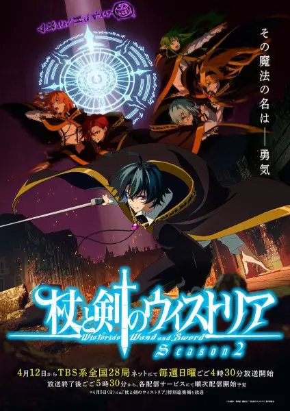

TV · 2026
Меч и жезл Вистории 2
Tsue to Tsurugi no Wistoria Season 2
★ 8.2412 эп.Вистория: Жезл и меч
Русское описание загружается при открытии карточки.
Открыть в Taytlo
TV · 2026
Tsue to Tsurugi no Wistoria Season 2
Русское описание загружается при открытии карточки.
Открыть в Taytlo